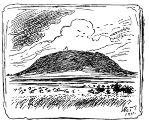

|
Jaroslav Seifert: Šel malíø chudì do svìta
Hora Øíp Vidìl jsem hory plné ledu, však zpívat o nich nedovedu. Jiskøily dálky nad hlavami jak bledì modré drahokamy. Jímala závra� pøi pohledu, zpívat však o nich nedovedu. Kdy� ale vidím na obzoru uprostøed kraje nízkou horu, na nebi mráèek bìloskvoucí – pøestane srdce chvíli tlouci. Oblaka letí v klasech zralıch a konì dupou po maštalích. V panácích jsou u� všude snopy a svatı Jiøí zvedá kopí, aby je vrazil ve chøtán draèí, a motıl spìchá po bodláèí; a jako krùpìj na prstenu tøpytí se drobná kvítka rmenu. Tu nemohu se vynadívat a všechno ve mnì zaène zpívat, zpívat i plakat. Maminko má, jak je to hezké u nás doma!  Jaroslav Seifert: Maminka Veèerní píseò Kdy� bylo dobøe mamince, bylo i pìknì v našem bytì. Hmo�díø, kterı stál na skøínce, zatøpytil se a okam�itì skla oken, po nich� pøed chvilkou plakalo ještì bílé jíní, svítila opìt po kuchyni, kde vonìlo to vanilkou. Kdy� zpívala, hned vesele spustili ptáci pøed okny nám. Mìla-li mráèek na èele, odletìli hned ptáci jinam. Zmlkli jsme rázem, ztichl smích. I èerné kotì, které tlapkou pohrávalo si se skoøápkou, dívalo se jí po oèích. Kdy� padala ji� únavou a veèer spát nás odnášela, tu rukou drsnou od popela stlala nám mìkce pod hlavou. V hoøáku ještì pøede plyn a nad pelestí pøechází nám, podobaje se pavuèinám, velikánskı stín maminèin. Dnes u� tak š�astnì neusínám. Domov Ty prosté vìci, je� jsem miloval, tou�il jsem míti vìrnì kolem sebe. A byl to ráj a já se o nì bál a vìdìl jsem, �e ztratím v nich kus nebe. Okno mi øeklo: Jen se rozhlédni, a� odejdeš, u� cizí budu tobì. Kyvadlo øeklo: Jdi, je k poledni. A køí�ek na zdi: Sejdeme se v hrobì. I dvíøka kamen �árem zsinalá v kouteèku pøi zdi, kde se pìknì klímá, tesklivì na práh za mnou volala: Pøijï ohøát se, kdyby ti bylo zima. Kdy� jsem byl dìcko, matka prosila: Blí�í se bouøka, zùstaò blízko domu. Svìt byl tak krásnı, moje rozmilá, a krásnìjší byl pod rachotem hromù. Rù�e mi øekla: Voním silicí, kdo po mnì sáhne, zbloudit lehce mù�e. Kdy� dotkla se mì ústa na líci, ústa mi øekla: Voníme jak rù�e. A mluvil oblak: V zemi tajemné uvidíš mo�ná vì�e krásnıch hradù. A na to øeka: Chvátej podél mne, uslyšíš záhy hukot vodopádu. Srdce, je� bilo pod vìncovím cév, øíkalo pøitom: Já ti nìco skrıvám. A ozval-li se sladkı �enskı zpìv, pravila touha: To já ti v nìm zpívám. I vtiskla matka ret mi na èelo a øekla: Sbohem. Šel jsem bez rozpakù. V�dy� v tichu, v kterém nic se nedìlo, slıchal jsem ze tmy dunìt kola vlakù. Po letech klepu doma na dveøe, na prahu suk a vyšlapaná škvíra. Ozvou se kroky? Kdo mi otevøe? Za dveømi ticho, nikdo neotvírá. Okno je kalné, prohnil jeho rám, u� netkví pevnì v starém, vetchém zdivì. Kyvadlo stojí, neví kudy kam. Jen køí�ek na zdi èeká trpìlivì. Podíval jsem se v šero zrcadla a poznal èas i cítil jeho tí�i. A v náruè té, je� v prach se rozpadla, ten, kterı pøišel, pomalu se blí�í. |